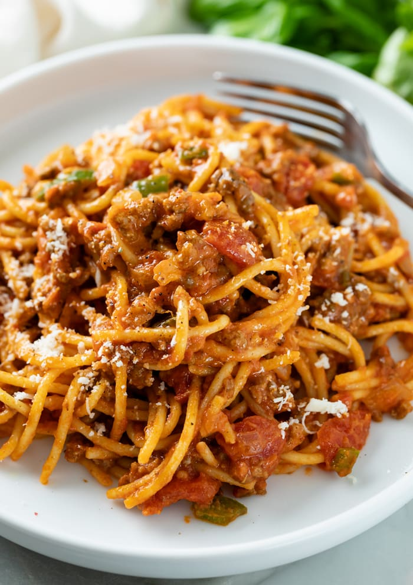

One Pot Spaghetti
Home

Description
I found this recipe on the Tik Tok account, "Three Pieces of Pecan".
I was looking for easy weeknight meals and came across his account. Three
are only a few ingredients and it takes about 30 minutes from start to finish.
My whole family loves this meal, most importantly my daughter is she is the pickiest
of us all.
Ingredients
- 1 lb Mild Italian Sausage
- 1 28 oz can Crushed Tomatoes
- 1 32 oz container Chicken Broth
- 1 cup Heavy Whipping Cream
- I lb Thin Spaghetti
- 1 tbs Dried Onion
- 1 tbs Italian Seasoning
- Salt to Taste
- Pepper to Taste
Steps
- Brown the Italian sausage on Medium High Heat
- Add the Crushed Tomatoes, Chicken Broth, Dried Onion, Italian Seasoning,
and Heavy Whipping Cream and bring to a boil
- Add Spaghetti and turn heat to low
- Cook for 20 minutes or until spaghetti is soft and sauce
is incorporated
- Serve